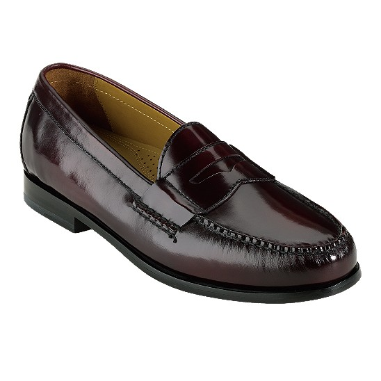

How to Choose the Right Dress Shoes: Men's Fashion Guide
By: Hazel
Know the Occasion
When it comes to dressing for an occasion, the right pair of shoes can make all the difference. It's crucial to choose a pair that complements your outfit and reflects the occasion's tone and level of formality. Understanding the basics of dress shoe style and color will help you make the right choice every time.
There are generally four types of dress shoes: Oxfords, Derbies, loafers, and monk straps. Oxfords and Derbies are the most formal types of dress shoes and are ideal for weddings, business meetings, and other formal events. Loafers and monk straps, on the other hand, are less formal and perfect for casual events such as garden parties or a night out with friends.
It's important to keep the color of your dress shoes in mind while choosing the right pair. Black shoes are the most formal and match well with darker suits. Brown shoes, on the other hand, are a versatile choice that go with a variety of outfits and are a great choice for more casual occasions.
Once you have decided on the occasion, make sure you consider the time of day, location, and dress code. For evening events, opt for darker colors and shinier finishes, while lighter colors and matte finishes are perfect for daytime events.
Lastly, always ensure that your dress shoes fit well and are comfortable. A poorly fitting shoe can cause foot pain and blisters, which can ruin the entire occasion.
In conclusion, understanding the occasion and dress code is key to choosing the right pair of dress shoes. Whether attending a formal wedding or a casual night out, knowing the basics of dress shoe style and color will help you make the right choice every time.
ad space
Consider Your Color Palette
When it comes to choosing the perfect pair of men's dress shoes, there are a lot of factors to take into consideration. You want to choose a shoe that is both comfortable and fashionable, while also complementing your personal style. One factor that often goes overlooked is the color palette of your wardrobe.
Your shoe color should complement your outfit, not clash with it. If you're unsure which color to choose, look at the basic colors in your wardrobe. If you wear a lot of grey, black or navy, consider a classic black or brown shoe. These colors are versatile and will go with many outfits.
If, on the other hand, you wear a lot of lighter colors like pastels or brights, consider a shoe in a similar color palette. A tan or light brown shoe is a great choice for those who wear lighter hues. This color will complement your outfit without overpowering it.
It's also important to consider the formality of the event or occasion for which you are dressing. If you're dressing for a wedding or a formal event, opt for a classic black or brown shoe. For more casual occasions, consider a more bold choice like a burgundy or even a blue shoe.
Don't be afraid to experiment with different shoe colors and styles. The right shoe can elevate your entire outfit and take your style to the next level. At the end of the day, the key is to choose a shoe that complements your personal style while also taking into consideration the colors you wear most often.
ad space
Select the Right Material
When it comes to choosing the right dress shoes for men, the material plays a critical role in determining the overall look, feel, and durability of the footwear. From polished leather to matte suede, there are several material options to consider before you take a leap and make a purchase. In this article, we will help you navigate the world of men's dress shoe materials, so you can make a well-informed decision.
Leather is arguably the most popular material for dress shoes, and for a good reason. Not only is it a durable option that can last for years, but it also offers a classic and timeless look that never goes out of style. However, not all leather is the same. Full-grain leather, which is made from the top layer of cowhide, is the most durable and offers the highest quality look. On the other hand, corrected-grain leather is lower quality and tends to be stiffer and less breathable.
Suede, a popular alternative to leather, offers a more relaxed and casual look while still being appropriate for dressier occasions. However, it is important to note that suede is more delicate than leather and requires a bit more maintenance. It is also more susceptible to stains, water damage, and scuffs, so it's essential to treat it with a suede protector spray.
Another material option is patent leather, often used for formal footwear. Its glossy finish gives a classy and polished look to any outfit, but it's less breathable and less durable than standard leather.
Ultimately, the material you choose heavily depends on your style preferences and the occasion. Whether you opt for leather, suede, or another option, always consider the quality of the material to ensure that your shoes withstand the test of time. By taking the time to choose the right material, you'll step out in style and confidence with your dress shoes.
ad space
Pay Attention to Details
When it comes to dressing sharp and looking your best, few things compare to a good pair of dress shoes. However, choosing the right pair can be a daunting task, especially for men who are just starting to build their wardrobe. With so many styles, colors, and materials to choose from, it's easy to feel overwhelmed and unsure of where to start.
That's why paying attention to details is crucial. Details can make or break a dress shoe, and they can also help you narrow down your choices and find the perfect pair for your needs. Here are some details to consider:
Quality materials: A good dress shoe should be made of high-quality materials that will last a long time and look great. Leather is a popular choice, as it is durable, comfortable, and can be polished to a shine. Look for shoes made from full-grain leather, as it is the highest quality and will age well over time.
Style: It's important to choose a shoe that fits your personal style and the occasion. For formal events, a classic oxford or derby shoe in black or brown is a safe bet. For more casual outings, a stylish loafer or monk strap shoe in a lighter color can add some flair to your outfit.
Fit: A properly fitting shoe is essential for both comfort and style. Make sure to measure your feet and try on your shoes before purchasing to ensure a comfortable fit. The shoe should be snug around the heel and have enough room in the toe box for your toes to move around freely.
Details: Paying attention to small details like stitching, hardware, and embellishments can help you find a shoe that stands out and reflects your style. A brogue or wingtip shoe with decorative perforations can add some personality to your outfit, while a plain cap-toe shoe can be timeless and versatile.
In conclusion, paying attention to details is crucial when choosing the right dress shoes. By considering the quality of the materials, the style, the fit, and the small details, you can find a shoe that not only looks great but also fits your personal style and needs. So take your time, do your research, and invest in a good pair of dress shoes that will last you for many years to come.
ad space
Find the Right Fit
Dress shoes are an essential part of any man's wardrobe. They exude sophistication and style, regardless of the setting. However, for the uninitiated, purchasing the right pair of dress shoes can be daunting. With so many types, sizes, and styles, it’s easy to become overwhelmed. That's why we've created this men's fashion guide to help you choose the right pair of dress shoes.
One of the most important factors when selecting a pair of dress shoes is ensuring they fit correctly. A poorly fitting pair of shoes not only looks unattractive but can also cause discomfort and even pain. To find the right fit, there are several things to consider.
Firstly, the width of the shoe is crucial, and it's essential to determine if you have narrow, regular, or wide feet. Finding a shoe that accommodates your foot's width will ensure a comfortable fit.
Secondly, pay attention to the length of the shoe. Your toes should have enough room to move freely, but not too much room that your foot moves around within the shoe.
Finally, consider the arch support. A shoe with good arch support can prevent foot fatigue and discomfort.
When trying on dress shoes, wear the socks you intend to wear with them to ensure the right fit. Walk around in the shoes; they should feel secure and stable on your feet.
Finding the right dress shoes isn't just about comfort but also reflects your persona and style. Whether you prefer classic, timeless shoes or more modern, fashion-forward designs, our guide has something for everyone. So, why not take a look and find the perfect pair of dress shoes today!
ad space
Conclusion
After reading through various articles and trying on countless pairs of dress shoes, we come to a conclusion that the right pair of dress shoes can make or break an outfit. And with so many styles, colors, and materials, it can be overwhelming to choose the perfect pair.
First and foremost, it's important to know what occasion you'll be wearing the shoes for. Whether it's a wedding, job interview, or night out, the appropriate shoe can elevate your outfit and make a statement. Next, consider the style - from classic oxfords to modern loafers, there's a shoe for every taste.
Material is also a crucial factor to consider. Leather is a timeless choice and can last for years with proper care, while suede adds texture and interest to any ensemble. And don't forget about the color - black is the most versatile, but brown and burgundy shades can add personality to your look.
Another important aspect is fit. Make sure to measure your foot to ensure the perfect size and choose a shoe with a comfortable insole and proper arch support. Don't sacrifice comfort for style - there are plenty of options that offer both.
Lastly, don't be afraid to invest in a quality pair of dress shoes. The right pair can last for years and elevate any outfit. Take care of them with regular polishing and maintenance to ensure they last even longer.
In conclusion, choosing the right dress shoes can seem daunting, but with a little knowledge and research, it's a necessary step in completing any outfit. Consider the occasion, style, material, fit, and quality when making your final choice. And above all, remember that the right pair of shoes can make all the difference.
ad space